Download and install Android SDK, NDK, JDK
- Download Qt Open Source installer here: https://www.qt.io/download-open-source. Scroll down and press on the 'Qt Online Installer' button:
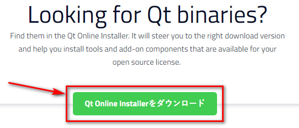
- Press the 'Qt Online Installer for Windows':
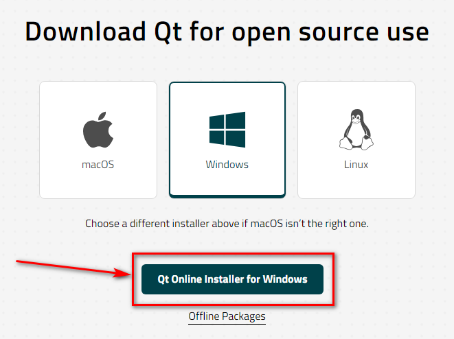
- In Qt Installer you should select the 'Custom Installation':
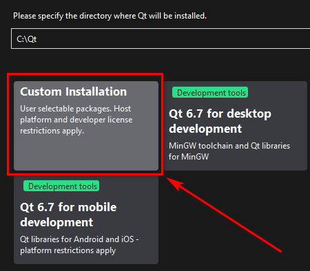
- I prefer to use Qt 6.6.3 instead of Qt 6.7.0 because Qt 6.6.3 used one NDK 25 (1.31 GB). But Qt 6.7.0 uses two NDK's - v25 (1.31 GB) plus v26 (1.9 GB). At first unckeck 'Qt Design Studio' (it requires 2 GB and I think you don't need it for a while):
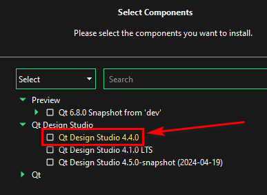
- Set the following checkboxes:
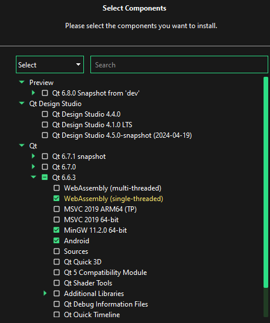
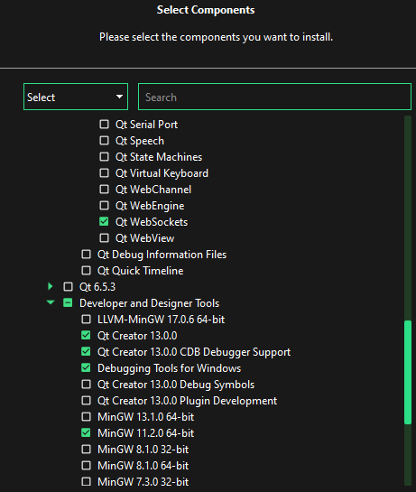
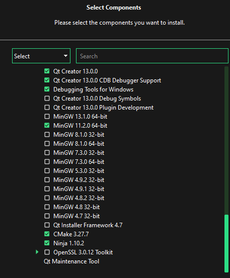
- Do not forget to check 'Android'. Press 'Next' and so on. It requires 3.88 GB
- Run 'Qt Creator'. Go to the settings: 'Edit' > 'Preferences...' > 'Device' > 'Android'
- Press the following buttons to downloa Android SDK and JDK:
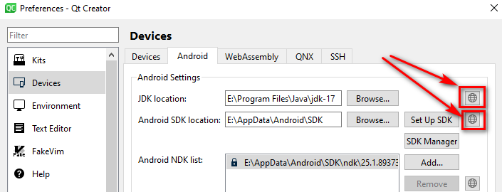
- Press the 'SDK Manager' button:
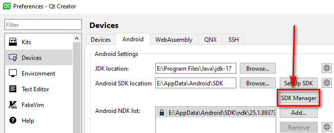
- Select the following Android packages and tools and press 'Apply':
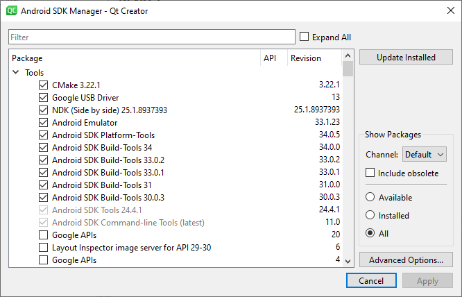
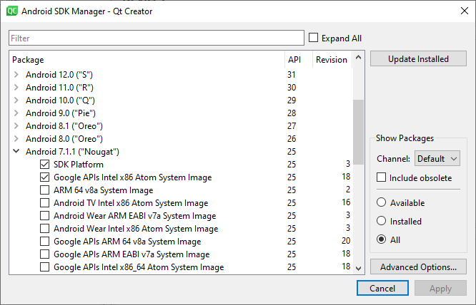
- Press the following button to download OpenSSL:
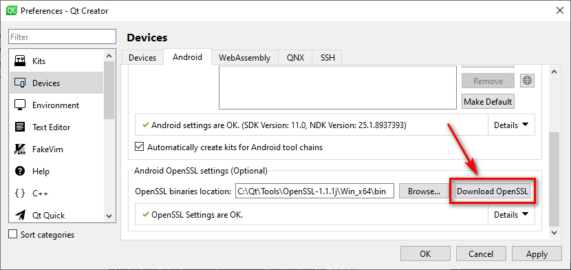
- Press the 'Apply' button:
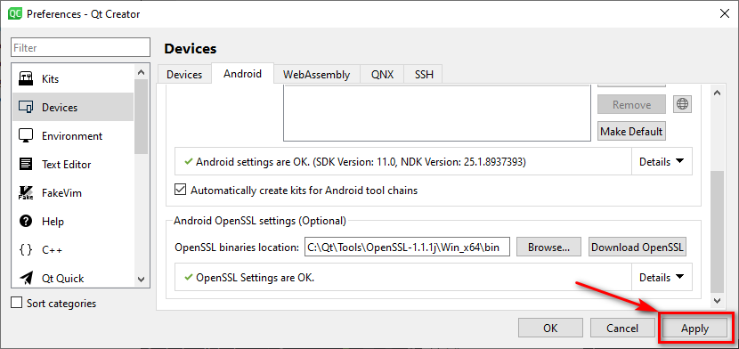